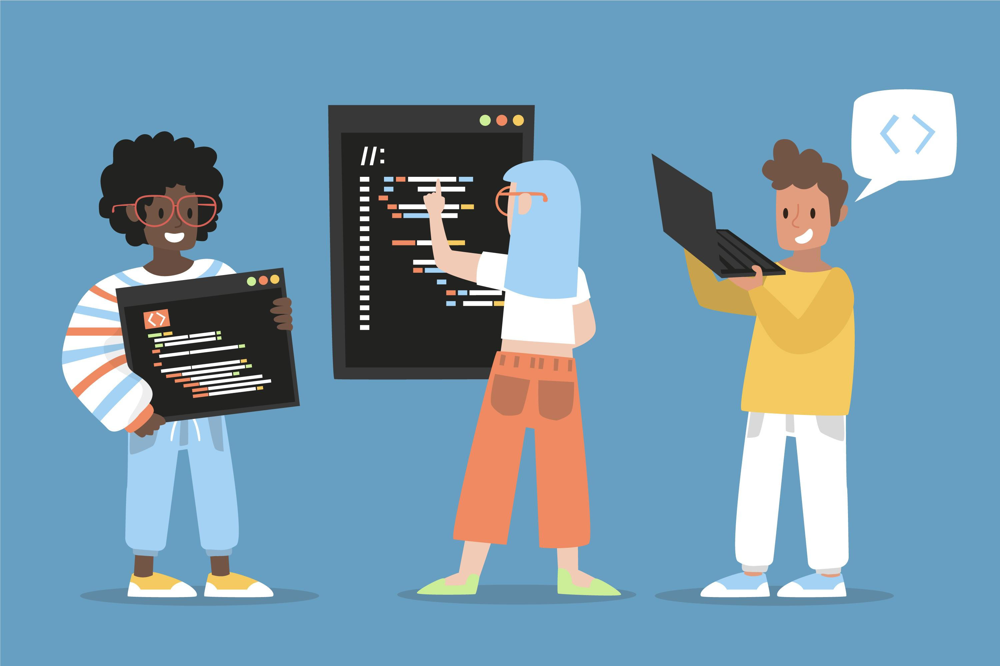
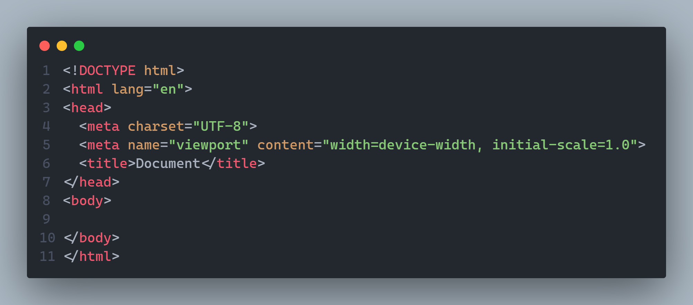
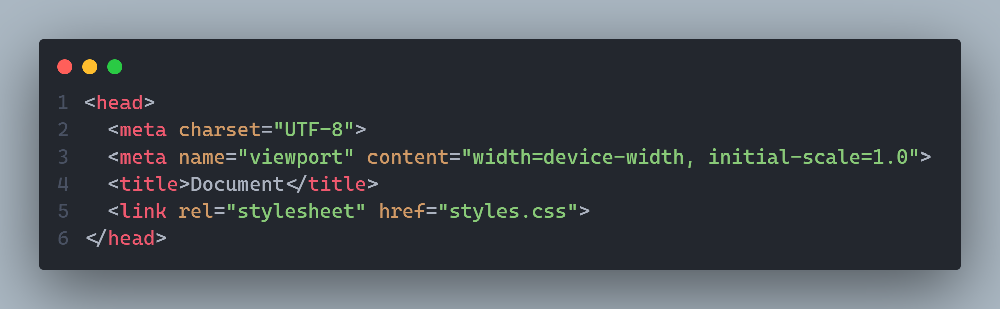
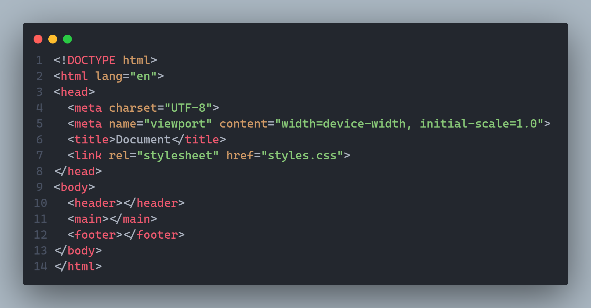

¿Cómo crear una página web? 🤔
Ivo Pascal Ríos | Última modificación: 24/03/25 | Tiempo de lectura: ~10 minPara crear una página web se requieren muchos pasos, algunos más complejos que otros; en este blog, nos centraremos en los pasos necesarios para crear la estructura más básica de todas.
¿Qué necesitamos? 📝
- Un ordenador/pc
- Un navegador web
- Un editor de código
Pasos a seguir
- Para el primer paso, abriremos nuestro navegador web y nuestro editor de código (con una carpeta vacía) 📂.
- Para el segundo paso, crearemos un archivo llamado "index.html" en la raíz de nuestra carpeta. Una vez creado, abriremos el archivo y crearemos la estructura básica colocando ❕ y dando enter para el autocompletado. 
- Para el tercer paso, crearemos un archivo con el nombre "styles.css"; este será nuestro medio para añadir estilos a nuestra web. Iremos a nuestro index.html, y dentro de la etiqueta "head" tipearemos "link:css", donde colocaremos la ruta de nuestro documento. 
- Una vez hecho esto, podemos empezar a añadir contenido a nuestra web. Para ello existen múltiples etiquetas que podemos utilizar, como h1 para añadir títulos; p para añadir párrafos; div para crear contenedores, etc. Existen etiquetas que se utilizan para mantener una estructura general en la web: header, main y footer 
- Como último paso, iremos a nuestro archivo de estilos y comenzaremos a decorar! Hay muchas formas y combinaciones para hacer, por lo que te dejamos ejemplos de los más comunes:
- Colocaremos "color: red" para darle color rojo al elemento en cuestión.
- Colocaremos "font-weight: bold" para darle un tamaño de fuente en negrita a los textos deseados.
- Colocaremos "background-color: blue" para darle un fondo azul al contenedor que elijamos.
Conceptos a tener en cuenta 🧠
- Etiqueta HTML
- Las etiquetas HTML son como las piezas de LEGO con las que construyes una página web. Son instrucciones que le dicen al navegador cómo debe mostrar el contenido. Cada etiqueta tiene un propósito y, al combinarlas, logras que tu página tenga estructura y estilo. Algunas etiquetas tienen apertura y cierre "<.p>Hola<./p>", mientras que otras van solas "<.img src="foto.jpg" />".
- Editores de Código
- Un editor de código como VS Code es como un "cuaderno inteligente" para programadores. No es solo un bloc de notas; te ayuda a escribir código más rápido y sin errores gracias a funciones como autocompletado, resaltado de sintaxis y depuración. Además, puedes instalar extensiones para casi cualquier lenguaje o herramienta, lo que lo hace súper personalizable. Básicamente, es el lugar donde escribes, pruebas y organizas tu código de manera eficiente. 🚀
- JavaScript
- JavaScript es el "mago" de las páginas web. 🧙♂️✨ Si HTML es el esqueleto y CSS la ropa y el maquillaje, JavaScript es el que les da vida. Con él puedes hacer que los botones reaccionen cuando los clickeas, que aparezcan mensajes, que una imagen cambie sola, o incluso que una página se actualice sin recargar.